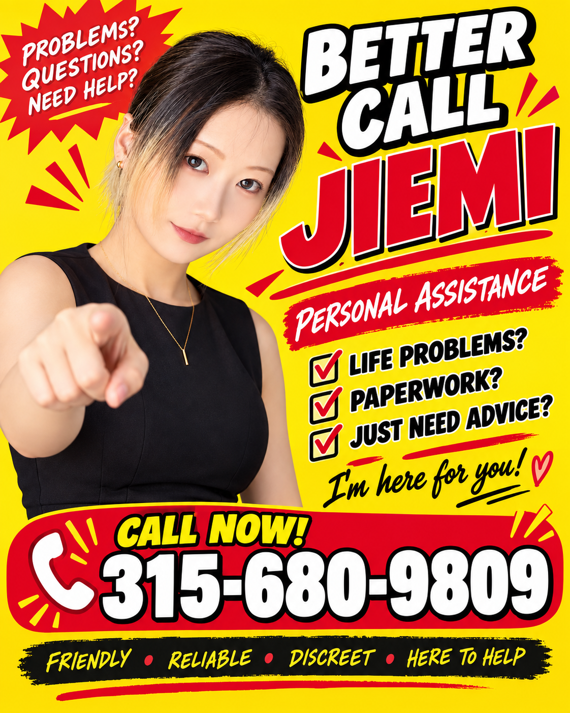

Everyday Help
A helping hand with errands and everyday situations.
Learn MoreGot a strange problem in Syracuse? Better Call Jie Mi!

A helping hand with errands and everyday situations.
Learn MoreHelp with rides, directions, and exploring Syracuse.
Learn MoreGet comfortable with your new life in Syracuse.
Learn MoreHelp with computers, phones, and confusing technology.
Learn MoreUnexpected trouble? Find help and useful resources.
Learn MoreMeet the friend behind Better Call Jie Mi.
Learn MoreThis is Jie Mi.
I enjoy singing, dancing, rapping, and basketball — yes, this is an ancient Chinese internet meme.
I am currently a senior undergraduate student in the United States, majoring in Marketing and attempting to migrate into the mysterious world of tech.
My current direction is Business Analysis. If any kind-hearted individual would like to donate a recommendation letter to this cause, please feel free to contact me.
Within certain corners of the Syracuse Chinese community, Jie Mi has become something of a legendary character.
Events experienced during my undergraduate years include, but are definitely not limited to:
Spent five days in a psychiatric hospital.
Yes, this happened.
Yes, I eventually returned to campus and continued doing homework like a normal person.
Helped multiple friends living on South Campus remove and install handheld shower heads for free.
At some point, this became an unofficial community service.
Helped a film major prepare extremely cost-effective meals for a student film crew.
Thousands upon thousands of calories were produced using only one Jie Mi and a Restaurant Depot membership card — a mysterious Earth Online item normally obtainable only by merchants and business owners.
Once drove back and forth to Ithaca delivering things for my godmother, received a $360 speeding ticket, and decided to represent myself in court.
After researching the process and appearing in court, I successfully reduced the ticket to approximately $200.
For one brief moment, Marketing major Jie Mi became Attorney Jie Mi.
While driving on the highway to Buffalo, I nearly got hit by a double-trailer truck after entering its blind spot.
Adrenaline activated.
Emergency steering activated.
The car performed what can only be described as a dramatic dragon-tail maneuver.
Both Jie Mi and the vehicle escaped completely unharmed.
After sleeping for approximately two hours, I somehow woke up fully energized and completed my first solo five-hour drive to Mount Kisco to pick up a car.
Not recommended.
Still happened.
As a Marketing major, I somehow ended up helping an Illustration major write an analysis of famous paintings.
This is slightly less random than it sounds.
Our legendary Jie Mi studied the IB program in high school and, for reasons known only to her younger self, chose Visual Arts as one of her subjects.
Jie Mi frequently enters Wegmans or Barnes & Noble for completely normal errands and somehow triggers conversations with mysterious elderly Earth Online NPCs.
These conversations can last approximately one hour and may include:
Unlocked.
Also unlocked.
Successfully packed, moved, transported, and reorganized an unreasonable amount of personal belongings within a single day.
No professional moving company.
Just Jie Mi.
After four years in Syracuse, I have somehow accumulated experience in presentations, photography, food, driving, moving, random errands, apartment problems, paperwork, and situations that begin with:
"Jie Mi, do you know how to deal with this?"
Surprisingly often, the answer is yes.
So if life suddenly gives you a strange side quest:
Better Call Jie Mi.